Krieger
Nahkampf · Verteidigung
Steht in der ersten Reihe und hält am meisten aus. Treffer erzeugen Wut, die in verheerende Fähigkeiten fließt.
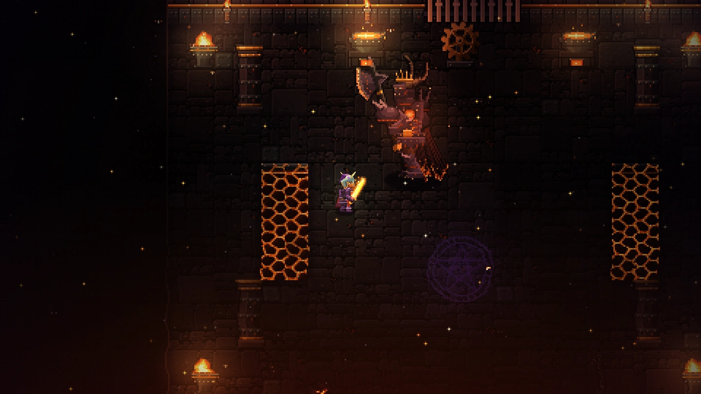
Der Berg ist erwacht. Die Toten stehen wieder auf.
Trag die Glut in die Dunkelheit.
Früher Zugang · Einzelspieler · läuft im Browser auf PC und Handy
Die Welt
Jedes Gebiet hat eigenes Licht, eigenes Wetter, eigene Musik und eigene Gegner. Vom Dorf am Lagerfeuer führt der Weg durch Wälder, versunkene Tempel und Schlackefelder bis an den Thron des Glut-Tyrannen.
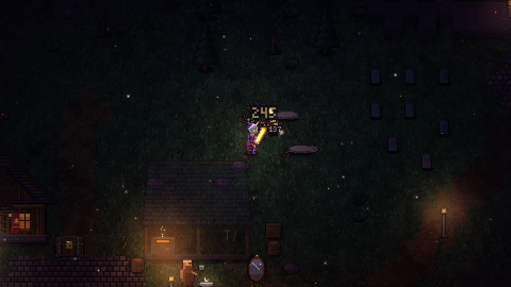
Das letzte Dorf vor dem Berg. Wölfe streifen um die Palisaden, und die Dorfälteste Maren braucht Hilfe.
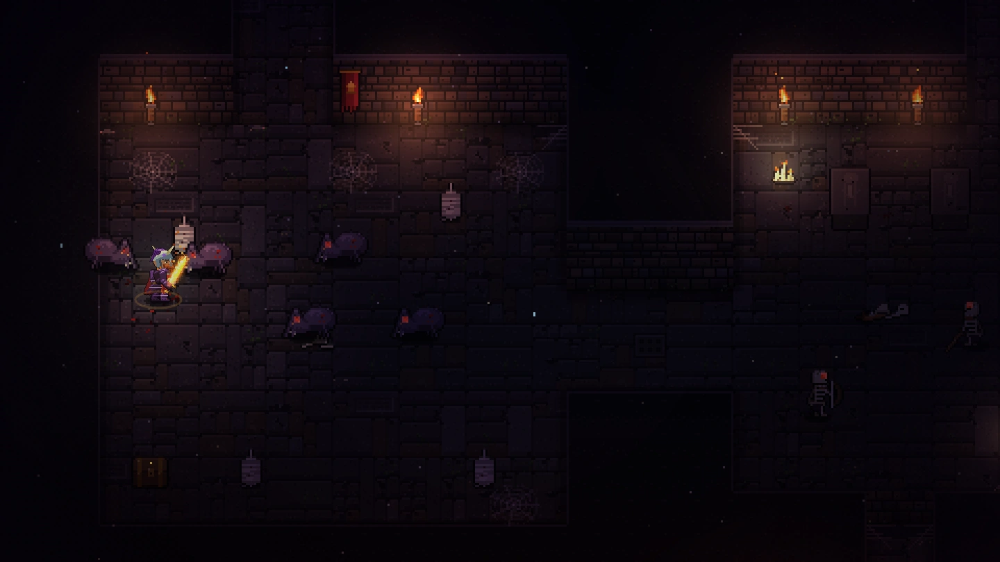
Spinnweben, Knochenhaufen und Fackeln, die nicht lange brennen. Unten wartet der Knochenfürst.
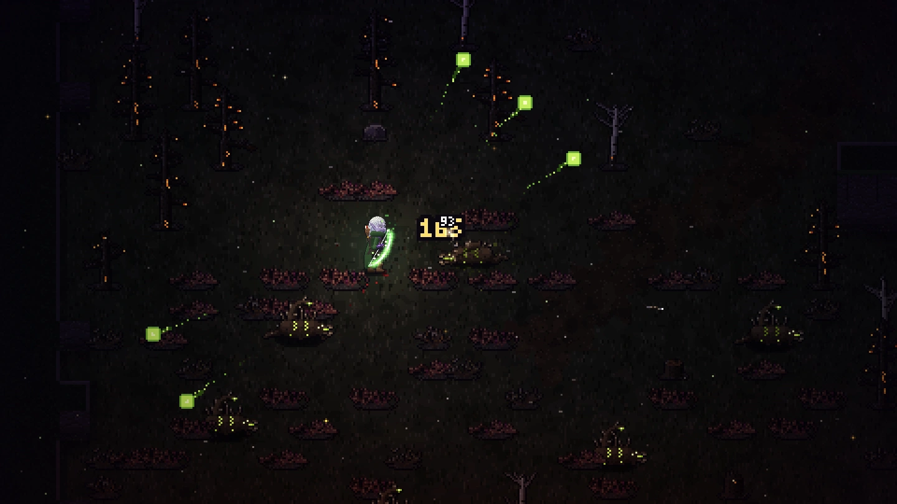
Glimmende Bäume, Dornenkriecher und Banditen. Hier ziehen Gewitter über die Asche.
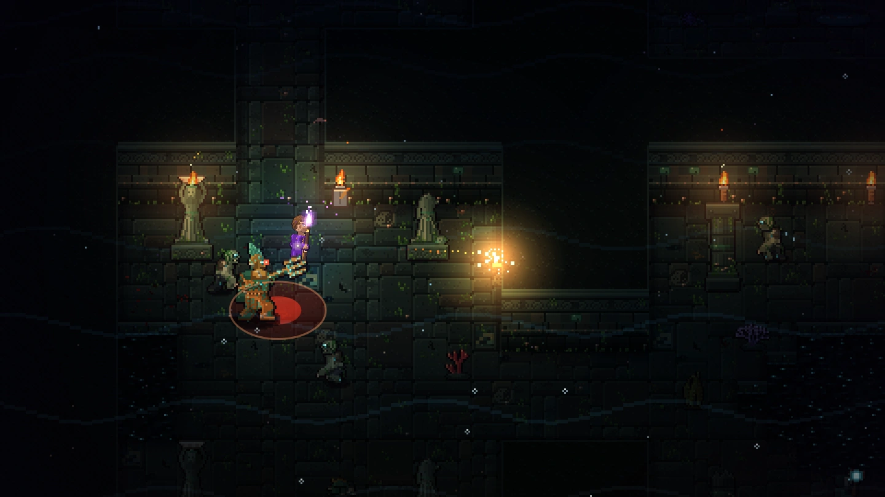
Die Flut hat die Priesterschaft nicht getötet, sie hat sie verwandelt. Wasserlicht auf altem Stein.
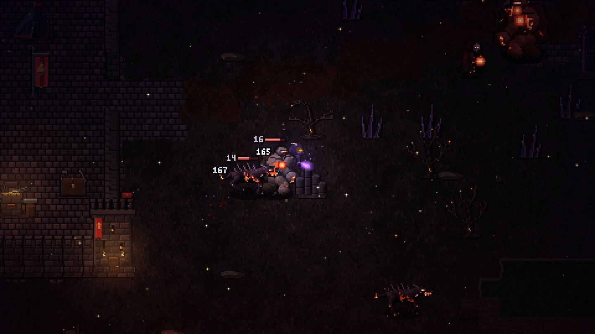
Ascheregen, Aschegolems und das Lager der Rauhwacht, der letzte Halt vor der Schmiede.
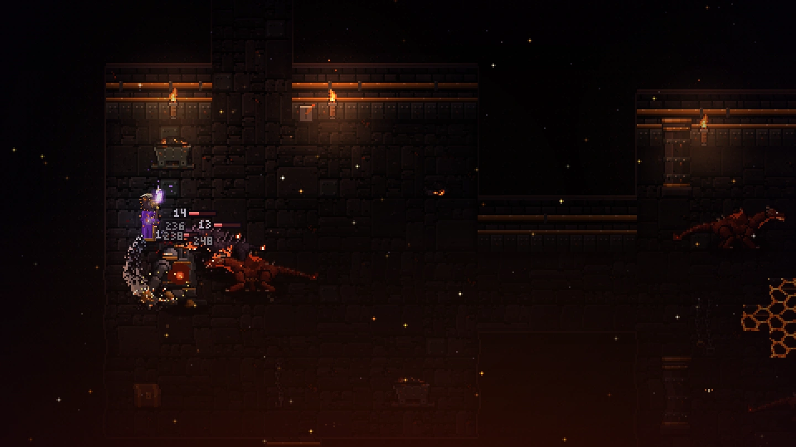
Das Herz des Berges. Magma, Glutdrachen und der Thron, auf dem alles begann.
Bosse
Jeder Boss hat eigene Phasen, Angriffe mit Vorwarnung am Boden und eine eigene Arena. Wer zu gierig zuschlägt, liegt schnell selbst im Staub.
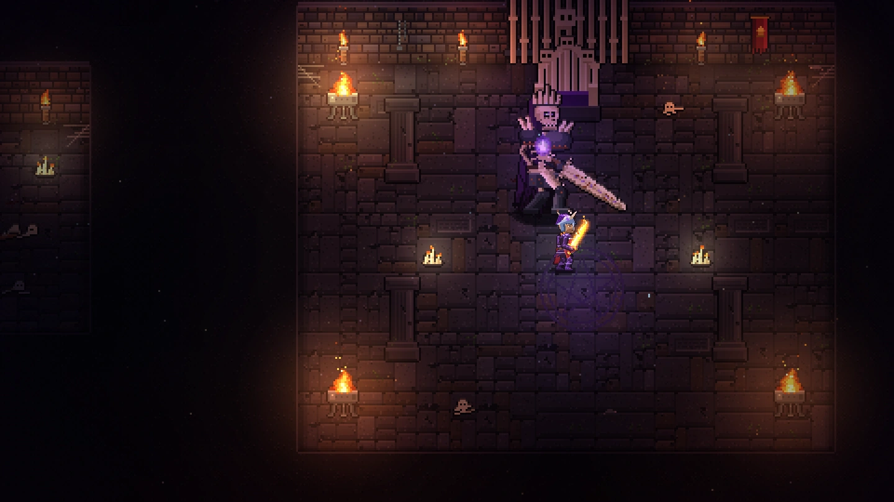
Klassen
Vier Klassen mit je vier Fähigkeiten und eigenem Talentbaum, dazu vier Völker: Mensch, Zwerg, Schattenelf und Glutgeborene. Jede Rüstung, die du anlegst, siehst du an deiner Figur.
Nahkampf · Verteidigung
Steht in der ersten Reihe und hält am meisten aus. Treffer erzeugen Wut, die in verheerende Fähigkeiten fließt.


Nahkampf · Beweglichkeit
Zwei Klingen aus dem Schatten. Schnell hinein, Gift auf die Klingen, und bevor der Gegner reagiert, ist der Todesstoß schon gesetzt.


Fernkampf · Kontrolle
Pfeil und Bogen, Abstand und Übersicht. Salven gegen Gruppen, Durchschüsse gegen Reihen und Pfeilhagel für alles, was noch steht.


Fernkampf · Flächenschaden
Feuer aus der Tiefe. Flammenringe, Feuerbälle und am Ende ein Meteor, der ganze Horden auf einmal auslöscht.


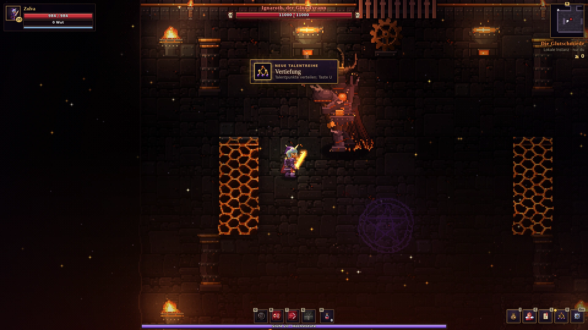
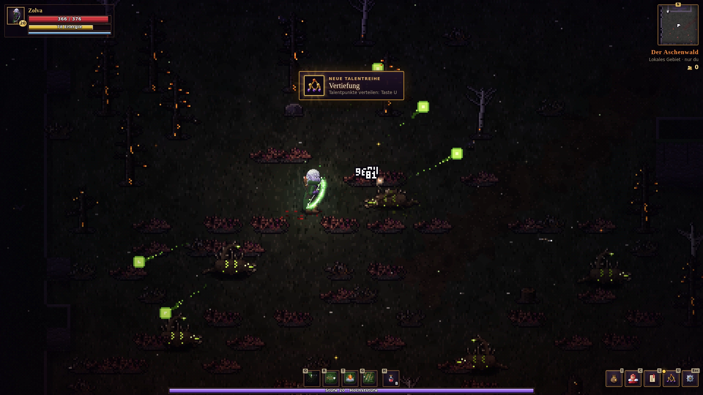
Im Spiel
Unterwegs
Emberwrath passt sich an: im Querformat die volle Ansicht, im Hochformat ein eigenes Bild mit großen Touch-Knöpfen. Links ziehen zum Laufen, rechts Angriff, Ausweichen und vier Fähigkeiten.
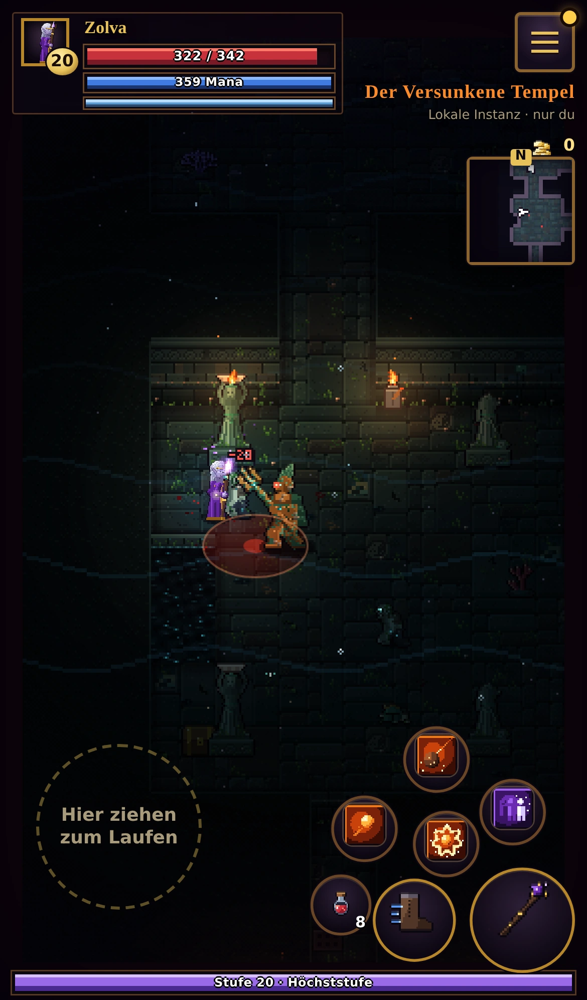
Community
Neue Gebiete, Klassen und bald das gemeinsame Spielen: Folge Emberwrath, um nichts zu verpassen.
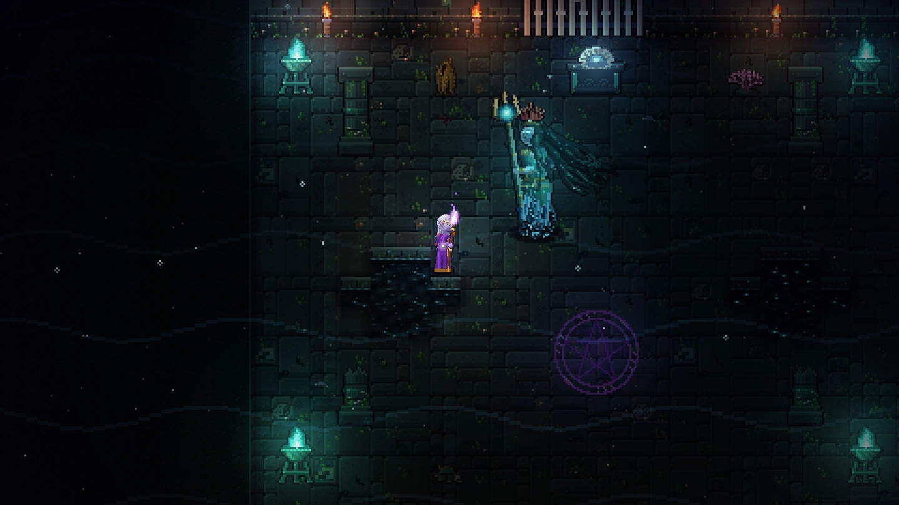
Erschaffe deine Figur und steh in wenigen Sekunden am Lagerfeuer.